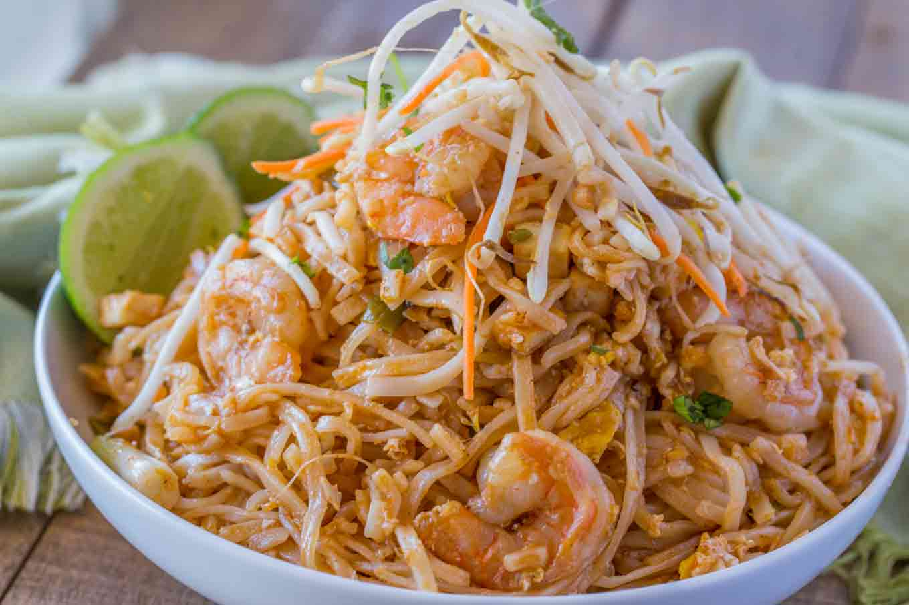

Pad Thai Recipes

Desceiption
Pad Thai, one the best dishes originally from Thailand.
Ingredients
- 1/4 cup canola oil
- 14 ounce rice noodles
- 1 pound shrimp , peeled and deveined
- 8 ounces extra firm tofu , cut into 1/2" cubes
- 3 large eggs
- 1/4 cup fish sauce
- 2 tablespoons rice vinegar
- 1/3 cup white sugar
- 1/2 teaspoon crushed red pepper
- 1 cup bean sprouts
- 3 carrots , julienned
- 1/4 cup crushed peanuts
- 2 green onions , chopped
- 1 lime , cut into wedges
- cilantro , for garnish (optional)
Instructions
- Add the rice noodles to boiling water for 1 minute, then turn off the heat and let sit for five minutes.
- When softened rinse with cold water and set aside.
- Add canola oil to a wok on high heat and add the shrimp and tofu cubes.
- Cook for 1-2 minutes on each side, then remove the shrimp and tofu from the pan (leave the oil in the pan).
- Add the eggs into hot oil, and chop with a spatula into little pieces as your cooking them.
- Add softened noodles, shrimp, tofu, rice vinegar, fish sauce, sugar and red pepper.
- Serve topped with bean sprouts, carrots, green onions and lime wedges.